事件响应链
参阅iOS事件处理，看我就够了~
参阅iOS触摸事件全家桶
参阅iOS 事件
触摸事件生成(触摸 && 事件)
UITouch
- 一个手指一次触摸屏幕，就对应生成一个UITouch对象。多个手指同时触摸屏幕，生成多个UITouch对象。
- 多个手指先后触摸，系统会根据触摸的位置判断是否更新同一个UITouch对象。若两个手指一前一后触摸同一个位置(即双击)，那么第一次触摸时生成一个UITouch对象，第二次触摸会更新这个UITouch对象，这是该UITouch对象的Tap Count属性值从1变成2，若两个手指一前一后触摸的位置不同，将会生成两个UITouch对象，两者之间没有联系
- 每个UITouch对象记录了触摸的一些信息，包括触摸时间、位置、阶段、所处的视图、窗口等信息。
// 触摸的各个阶段状态
// 例如当手指移动时，会更新phase属性到UITouchPhaseMoved；
// 手指离屏后，更新到UITouchPhaseEnded
typedef NS_ENUM(NSInteger, UITouchPhase) {
UITouchPhaseBegan, // whenever a finger touches the surface.
UITouchPhaseMoved, // whenever a finger moves on the surface.
UITouchPhaseStationary, // whenever a finger is touching the surface but hasn't moved since the previous event.
UITouchPhaseEnded, // whenever a finger leaves the surface.
UITouchPhaseCancelled, // whenever a touch doesn't end but we need to stop tracking (e.g. putting device to face)
};
UIEvent
触摸事件：
触摸的目的是生成触摸事件供响应者，一个触摸事件对应一个UIEvent对象，
UIEvent对象中的type属性标识了事件的类型
typedef NS_ENUM(NSInteger, UIEventType) {
UIEventTypeTouches, //touch事件
UIEventTypeMotion, //运动事件
UIEventTypeRemoteControl, //远程事件
UIEventTypePresses NS_ENUM_AVAILABLE_IOS(9_0), //按压事件
};
UIEvent对象中包含了触发该对象的触摸对象集合
@property(nonatomic, readonly, nullable) NSSet <UITouch *> *allTouches;
UIResponder
UIResponder是iOS中用于处理事件的API，不仅用于接收事件，还可以处理对应事件，如果当前响应者不能处理，就转发给其他响应者
UIResponder类中包含了touchesBegan、pressesBegan、motionBegan、remoteControlReceivedWithEvent等方法，可以通过这些方法获取对应回调消息。
应用程序通过响应者来接收和处理事件，响应者可以是继承自UIResponder的任何子类，例如UIView、UIViewController、UIApplication等。当事件到来之际，系统会将事件传递给合适响应者，并成为第一响应者。如果第一响应者未处理事件，就会在响应者链中传递，其规则由UIResponder的nextResponder决定，可以通过重写该属性决定传递规则。当事件到来时，第一响应者没有接收消息，就顺着响应者链向后传递
Hit-Test 寻找第一响应者
当点击屏幕上的view时，UIKit会打包一个UIEvent对象，将其分发给正在活跃的app，放在当前Application维护的事件队列中
此时app的UIApplication单例对象就会从事件队列中获取最新的事件，然后分发给能处理该事件的对象。此时app的任务就是获取能够响应该事件的UIView了 这就是通过HitTest的作用了
Hit-Test
- (UIView *)hitTest:(CGPoint)point withEvent:(UIEvent *)event;
- (BOOL)pointInside:(CGPoint)point withEvent:(UIEvent *)event;//判断点击区域是否在视图上，是则返回YES，不是返回NO
hitTest:withEvent:方法内部会调用pointInSide:withEvent:方法，
具体流程：
UIApplication将事件传递给窗口对象UIWindow，优先询问后显示的窗口- 如果
Window不能响应事件，将事件传递给其它窗口；若窗口能响应事件，则从后向前(添加视图的逆序)询问窗口的子视图 - 类推，如果视图不响应事件，将其传递给同级的上一个视图，如果能响应，就遍历其子视图
- 如果其子视图都不能响应，则当前视图就是最合适的响应者
hitTest:withEvent:返回一个UIView对象,作为当前视图层次中的响应者。
其可能的实现为下：
- (UIView *)hitTest:(CGPoint)point withEvent:(UIEvent *)event{
//3种状态无法响应事件
if (self.userInteractionEnabled == NO || self.hidden == YES || self.alpha <= 0.01) return nil;
//触摸点若不在当前视图上则无法响应事件
if ([self pointInside:point withEvent:event] == NO) return nil;
//从后往前遍历子视图数组
int count = (int)self.subviews.count;
for (int i = count - 1; i >= 0; i--)
{
// 获取子视图
UIView *childView = self.subviews[i];
// 坐标系的转换,把触摸点在当前视图上坐标转换为在子视图上的坐标
CGPoint childP = [self convertPoint:point toView:childView];
//询问子视图层级中的最佳响应视图
UIView *fitView = [childView hitTest:childP withEvent:event];
if (fitView)
{
//如果子视图中有更合适的就返回
return fitView;
}
}
//没有在子视图中找到更合适的响应视图，那么自身就是最合适的
return self;
}
注意：在log事件调用时，其视图hitTest和pointInSide方法会按照顺序调用两次
视图无法响应事件的条件：
- UIView的几种无法响应事件：
- 不允许交互：
userInteractionEnabled = NO - 隐藏：
hidden = YES如果父视图隐藏 则子视图一会隐藏 - 透明度： alpha<0.01 视图在0~0.01之间为透明 也会影响子视图透明度
- 不允许交互：
- 通过
pointInSide的判断
事件传递
经过hit-test过程 UIApplication已经知道第一响应者，接下来
- 将事件传递给第一响应者
- 将事件沿着响应链传递
UIApplication通过sendEvent:传递给事件所属window，然后window在通过snedEvent:将事件传递给hit-tested View即第一响应者
//UIWindow
- (void)sendEvent:(UIEvent *)event; // called by UIApplication to dispatch events to views inside the window
通过在touchBegan的断点可以看到调用栈
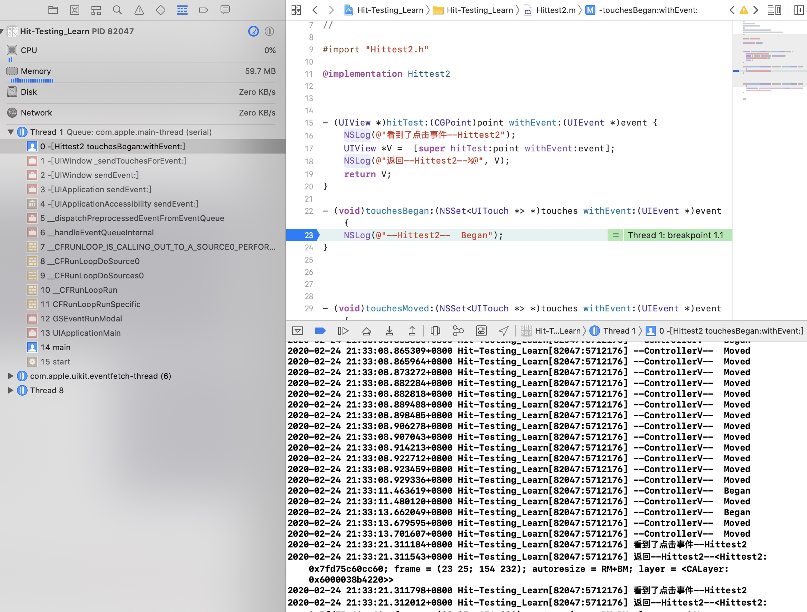
其中window将UIEvent对象直接发送给对应hit-test View
这是因为在hit-test过程时 将对应信息(对应的window和view)已经存入了UIEvent中的UITouch对象中
//UITouch 的属性 @property(nullable,nonatomic,readonly,strong) UIWindow *window; @property(nullable,nonatomic,readonly,strong) UIView *view;
事件沿着响应链传递
因为每个响应者一定是UIRsponder对象，其继承了4个响应触摸方法
- (void)touchesBegan:(NSSet<UITouch *> *)touches withEvent:(nullable UIEvent *)event;
- (void)touchesMoved:(NSSet<UITouch *> *)touches withEvent:(nullable UIEvent *)event;
- (void)touchesEnded:(NSSet<UITouch *> *)touches withEvent:(nullable UIEvent *)event;
- (void)touchesCancelled:(NSSet<UITouch *> *)touches withEvent:(nullable UIEvent *)event;
- (void)touchesEstimatedPropertiesUpdated:(NSSet<UITouch *> *)touches API_AVAILABLE(ios(9.1));
默认不做任何处理 只是将事件沿着响应链(不是父类)传递
第一响应者首先收到触摸事件，具有对触摸事件处理权，可以自己对其进行处理(通过重写该方法)，也可以将事件沿着响应链传递给下个响应者，这个由响应者之间构成的视图链就称为响应链(因此响应的过程为自上向下的)
响应者对事件处理：
响应者对事件的拦截和传递都是通过touchesBegan:withEvent:方法控制的，即只有能执行到该方法,才能有可能获取其它3个触摸事件方法
- 不拦截,即不重写该方法，默认沿着响应链传递
- 拦截， 重写
touchesBegan:withEvent:，并不将事件向下传递 - 拦截，重写
touchesBegan:withEvent:， 但再方法内部执行[super touchesBegan:withEvent:]将方法向下传递
传递规则
每个UIResponder都有下一个nextResponder，获取响应链中的下个响应者
如下图所示，因为响应链上的前两个响应者未响应began方法，因此默认调用[UIResponder touchesBegan:withEvent:]方法，方法内部调用[super touchesBegan:withEvent:]则执行fowardTouchMethod
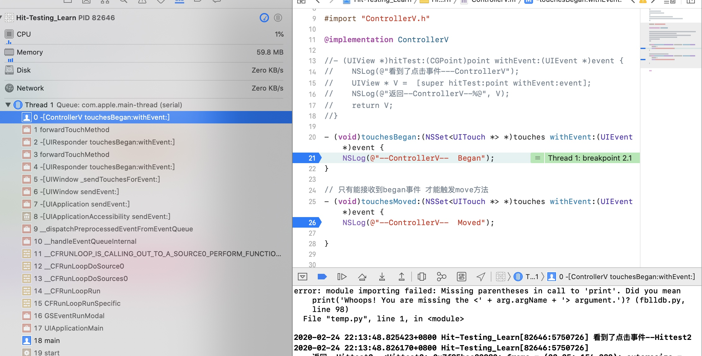
- UIView
若视图是控制器的根视图，则其nextResponder为控制器对象；否则，其nextResponder为父视图。 - UIViewController
若控制器的视图是window的根视图，则其nextResponder为窗口对象；若控制器是从别的控制器present出来的，则其nextResponder为presenting view controller。 - UIWindow
nextResponder为UIApplication对象 - UIApplication
若当前应用的app delegate是一个UIResponder对象，且不是UIView、UIViewController或app本身，则UIApplication的nextResponder为app delegate
可以通过
responder.nextResponder获取响应链中的所有响应对象
UIGestureRecognizer 手势
手势分为 离散型手势和持续型手势.系统提供的点按手势UITapGestureRecognizer和轻扫手势UISwipeGestureRecongnizer，其余的均为持续型手势。
主要区别在于其状态变化的过程
//离散型
识别成功: Possible->Recongnized
识别失败: Possible->Failed
//持续型
完整识别: Possible->Began->[Changed]->Ended
不完整识别: Possible->Began->[Changed]->Cancel
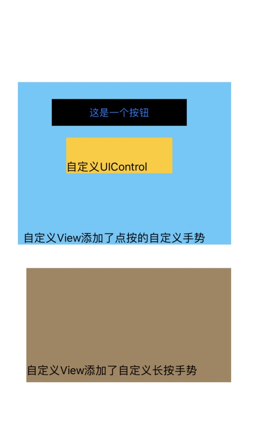
我们自定义了FSTapView、FSLongPressView、FSTapGestureRecognizer、FSLongPressGestureRecognizer、FSButton和FSControl并在类内部 重写4个事件处理方法，打印其方法执行，注意在重写方法最后调用super进行继续分发
GestureRecognizer虽然不是继承自UIResponder但是内部也有事件处理方法 会在接下来介绍
如果在GestureRecognizer接收到TouchEvent事件而没有调用super继续分发 则会导致该手势识别失败
离散手势
点点击添加了自定义点按视图时
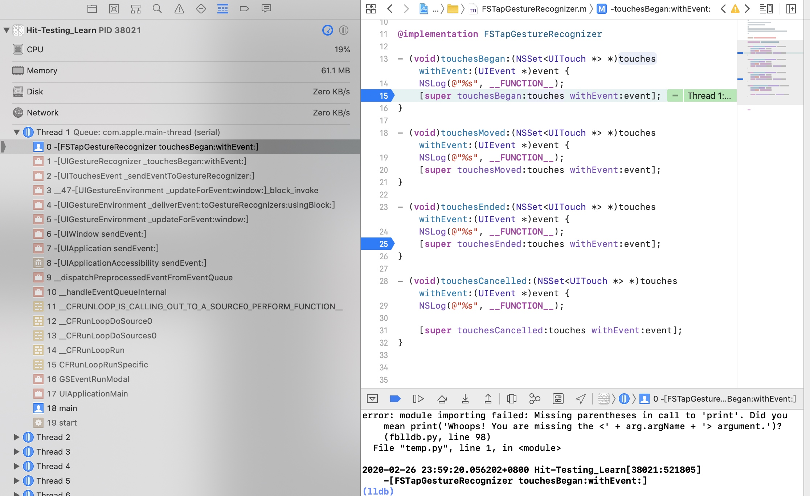
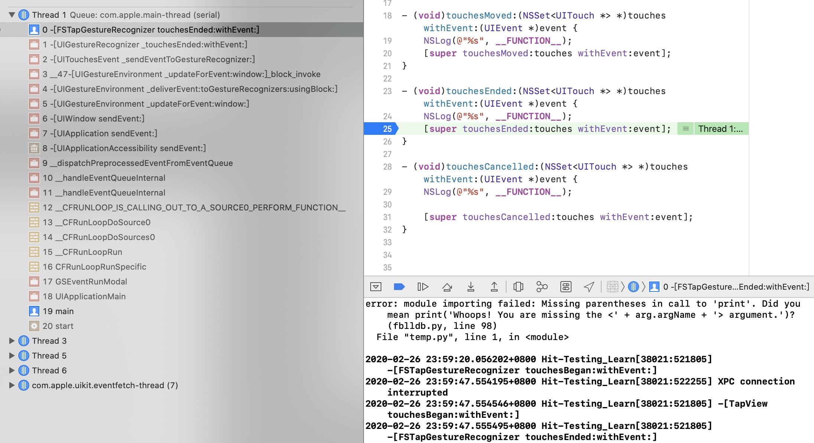
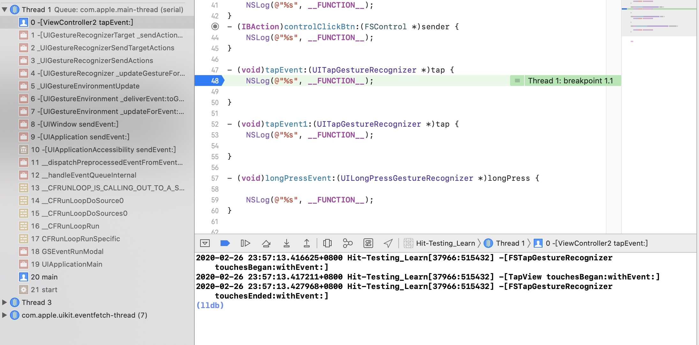
2020-02-26 22:48:34.999518+0800 Hit-Testing_Learn[36770:469711] -[FSTapGestureRecognizer touchesBegan:withEvent:]
2020-02-26 22:48:35.000166+0800 Hit-Testing_Learn[36770:469711] -[TapView touchesBegan:withEvent:]
2020-02-26 22:48:35.001275+0800 Hit-Testing_Learn[36770:469711] -[FSTapGestureRecognizer touchesEnded:withEvent:]
2020-02-26 22:48:35.001735+0800 Hit-Testing_Learn[36770:469711] -[ViewController2 tapEvent:]
2020-02-26 22:48:35.001915+0800 Hit-Testing_Learn[36770:469711] -[TapView touchesCancelled:withEvent:]
可以看到
UIWindow将事件传递给第一响应者TapView前，将事件传递给了手势FSTapGestureRecognizer- 若手势识别成功(即收到了
touchesBegan和touchesEnded事件),则取消第一响应者对事件响应[TapView touchesCancelled:withEvent:] - 若手势识别未成功，第一响应者接手对事件进行处理
注意:
对于
FSTapGestureRecognizer必须对touchesBegan和touchesEnded方法调用super继续,否则会导致手势识别失败
对于手势识别器调用super并不是让其向下一个手势识别器传递事件，测试可得不论是否使用super 所有手势识别器都可以收到touch事件. 即window发送事件会将事件发送到所有的UItouch的数组中的所有手势识别器，发送并没有什么特定顺序，只有一个可以识别成功，并且当其识别成功其余的识别器则会全部失败，只有所有的手势识别器都识别失败，hit-testView 才可以接收触摸事件//TODO:
对于在添加了点按手势的视图上move 如果不超过视图范围，则手势和视图都可以收到move事件，如果在视图范围里离开手指？ 如果在视图范围外离开手指？如果超过一段时间?
因此，可以得出结论 UIGestureRecognizer比UIResponder具有更高的事件响应的优先级
在苹果官方文档也有这么一段话：
window将事件传递给手势识别器，然后将其传递给hit-test的添加了手势的视图。假如手势识别器以多点触摸顺序分析触摸流，但是并没有识别出其手势，则View将接收所有touch。如果手势识别器识别出手势，则将取消视图的其余touch。手势识别的常规操作顺序遵循以下路径，路径由`cancelsTouchesInView``delaysTouchesBegan``delaysTouchesEnded`属性的默认值确定
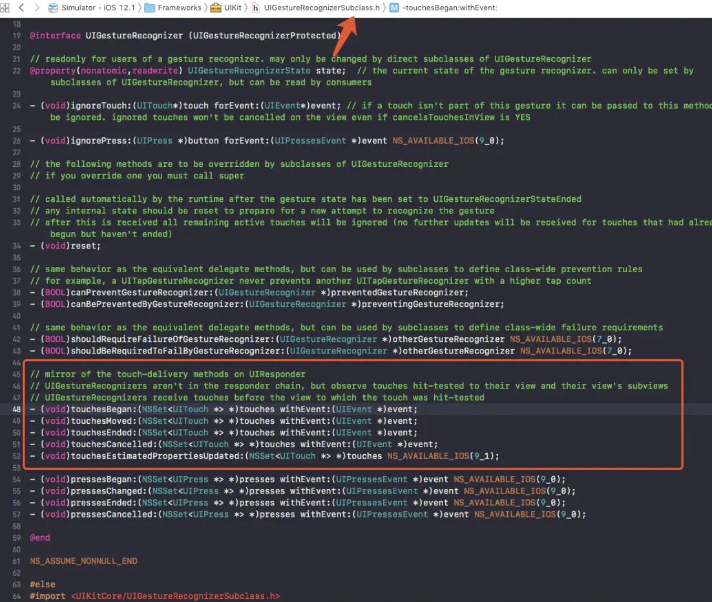
UIGestureRecognizer对事件的响应也是通过touch相关的4个方法来实现的，但是其并不是继承自UIResponder而是NSObject，而这4个方法声明在UIGestureRecognizerSubclass.h中。
UIWindow之所以知道把时间传递给那些手势识别器，主要通过UIEvent的Touch中的gestureRecognizers数组，而这个数组也是hit-test View寻找第一响应者过程中填充的。
UIWindow会取出UIEvent里面的gestureRecognizers数组的手势识别器，将事件传递给各个手势识别器，如果有一个手势识别器识别了事件，其他的手势识别器就不会响应该事件。
因为手势识别器识别事件，需要一定时间，因此tapView会先调用touchbegan，而因为手势识别器识别成功，则UIApplication向tapView发送取消(cancel)事件响应
持续型手势
2020-02-27 00:10:36.580259+0800 Hit-Testing_Learn[38200:533365] -[FSLongPressGestureRecognizer touchesBegan:withEvent:]
2020-02-27 00:10:36.581306+0800 Hit-Testing_Learn[38200:533365] -[LongPressView touchesBegan:withEvent:]
2020-02-27 00:10:37.582065+0800 Hit-Testing_Learn[38200:533365] -[ViewController2 longPressEvent:]
2020-02-27 00:10:37.582259+0800 Hit-Testing_Learn[38200:533365] state --- 1
2020-02-27 00:10:37.582529+0800 Hit-Testing_Learn[38200:533365] -[LongPressView touchesCancelled:withEvent:]
2020-02-27 00:10:37.660837+0800 Hit-Testing_Learn[38200:533365] -[ViewController2 longPressEvent:]
2020-02-27 00:10:37.661041+0800 Hit-Testing_Learn[38200:533365] state --- 2
2020-02-27 00:10:37.661267+0800 Hit-Testing_Learn[38200:533365] -[ViewController2 longPressEvent:]
2020-02-27 00:10:37.661449+0800 Hit-Testing_Learn[38200:533365] state --- 2
2020-02-27 00:10:37.773423+0800 Hit-Testing_Learn[38200:533365] -[ViewController2 longPressEvent:]
2020-02-27 00:10:37.773574+0800 Hit-Testing_Learn[38200:533365] state --- 2
2020-02-27 00:10:37.949981+0800 Hit-Testing_Learn[38200:533365] -[ViewController2 longPressEvent:]
2020-02-27 00:10:37.950156+0800 Hit-Testing_Learn[38200:533365] state --- 2
2020-02-27 00:10:37.957969+0800 Hit-Testing_Learn[38200:533365] -[ViewController2 longPressEvent:]
2020-02-27 00:10:37.958148+0800 Hit-Testing_Learn[38200:533365] state --- 2
2020-02-27 00:10:37.967924+0800 Hit-Testing_Learn[38200:533365] -[FSLongPressGestureRecognizer touchesEnded:withEvent:]
2020-02-27 00:10:37.968218+0800 Hit-Testing_Learn[38200:533365] -[ViewController2 longPressEvent:]
2020-02-27 00:10:37.968356+0800 Hit-Testing_Learn[38200:533365] state --- 3
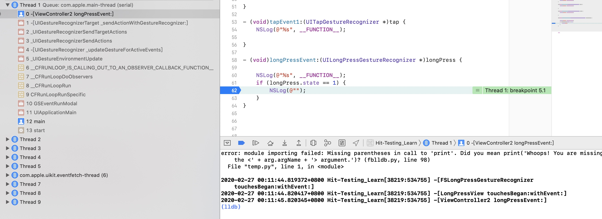
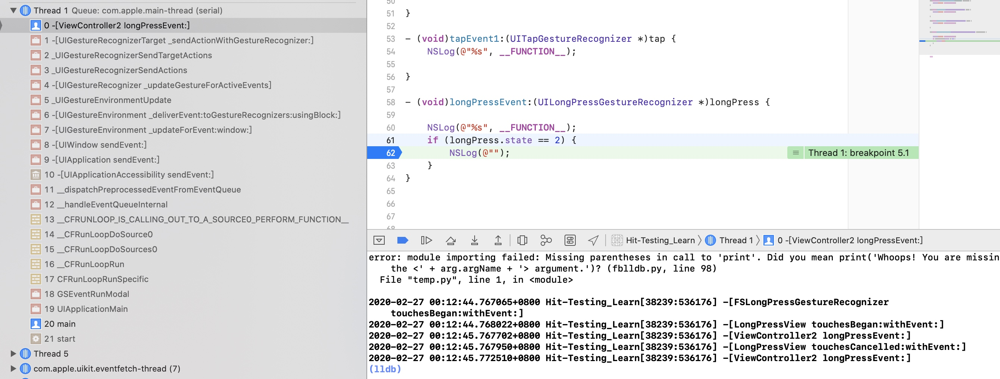
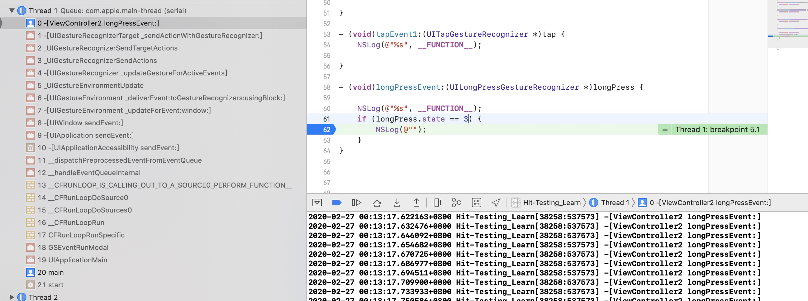
在堆栈可以看出，第一次调用时在runloop中通知监听的手势识别器的观察者，对其长按事件进行相应，此时state为UIGestureRecognizerStateBegan
第二次、第三次调用是UIWindow 先将事件传递给UIEvent的gestureRecognizers数组里的手势识别器，然后长按手势识别器FJFLongPressGestureRecognizer识别成功进行回调,此时手势识别器的state为UIGestureRecognizerStateChanged 和 UIGestureRecognizerStateEnded。
总结
当触摸发生或者触摸的状态发生变化时，UIWindow都会传递事件寻求响应。
-UIWindow先将触摸事件传递给响应链上绑定的手势识别器，再发送给触摸对象对应的第一响应者。
手势识别器识别手势期间，若触摸对象的触摸状态发生变化，事件都是先发送给手势识别器，再发送给第一响应者。
手势识别器如果成功识别手势，则通知UIApplication取消第一响应者对于事件的响应，并停止向第一响应者发送事件。
如果手势识别器未能识别手势，而此时触摸并未结束，则停止向手势识别器发送事件，仅向第一响应者发送事件。
如果手势识别器未能识别手势，且此时触摸已经结束，则向第一响应者发送end状态的touch事件，以停止对事件的响应。
拓展
在UIGestureRecognizer中存在以下3个属性
@property(nonatomic) BOOL cancelsTouchesInView; // default is YES. causes touchesCancelled:withEvent: or pressesCancelled:withEvent: to be sent to the view for all touches or presses recognized as part of this gesture immediately before the action method is called.
@property(nonatomic) BOOL delaysTouchesBegan; // default is NO. causes all touch or press events to be delivered to the target view only after this gesture has failed recognition. set to YES to prevent views from processing any touches or presses that may be recognized as part of this gesture
@property(nonatomic) BOOL delaysTouchesEnded; // default is YES. 仅在此手势识别失败后，才将touchesEnded或pressesEnded事件传递到目标视图。 这样可以确保如果识别出手势，可以取消手势的触摸或按动
cancelsTouchesInView
默认为YES。表示当手势识别器成功识别了手势之后，会通知Application取消响应链对事件的响应，并不再传递事件给第一响应者。若设置成NO，表示手势识别成功后不取消响应链对事件的响应，事件依旧会传递给第一响应者
delaysTouchesBegan
默认为NO。默认情况下手势识别器在识别手势期间，当触摸状态发生改变时，Application都会将事件传递给手势识别器和第一响应者；若设置成YES，则表示手势识别器在识别手势期间，截断事件，即不会将事件发送给第一响应者。delaysTouchesEnded
默认为YES。当手势识别失败时，若此时触摸已经结束，会延迟一小段时间（0.15s）再调用响应者的touchesEnded:withEvent:；若设置成NO，则在手势识别失败时会立即通知Application发送状态为end的touch事件给第一响应者以调用 touchesEnded:withEvent:结束事件响应
UIControl
UIControl是系统提供的能够以target-action模式处理触摸事件的控件，iOS中UIButton、UISegmentedControl、UISwitch等都是其子类
因为 UIControl是UIView子类，因此本身也具有UIResponder身份
UIControl作为控件类的基类，它是一个抽象基类，我们不能直接使用UIControl类来实例化控件，它只是为控件子类定义一些通用的接口，并提供一些基础实现，以在事件发生时，预处理这些消息并将它们发送到指定目标对象上。
Target-Action机制
当事件将要发生时，事件会被发送到控件对象，然后控件对象触发target对象上的action行为，最终处理事件。
UIControl能够响应事件的控件，必须也需要事件交互符合条件才去响应，因此也会追踪事件发生的过程。和UIResponder以及UIGestureRecongnizer通过touches系列方法追踪，UIControl有独特的追踪方式:
- (BOOL)beginTrackingWithTouch:(UITouch *)touch withEvent:(UIEvent *)event {
NSLog(@"%s",__func__);
return YES;
}
- (BOOL)continueTrackingWithTouch:(UITouch *)touch withEvent:(nullable UIEvent *)event {
NSLog(@"%s",__func__);
return YES;
}
- (void)endTrackingWithTouch:(nullable UITouch *)touch withEvent:(nullable UIEvent *)event {
NSLog(@"%s",__func__);
}// touch is sometimes nil if cancelTracking calls through to this.
- (void)cancelTrackingWithEvent:(nullable UIEvent *)event {
NSLog(@"%s",__func__);
} // event may be nil if cancelled for non-event reasons, e.g. removed from window
这4个方法和UIResponder的方法几乎温和,只是UIControl只能接收单点触控，因此参数是单个UITouch对象。和UIResponder职能类似，也是为了跟踪触摸的开始、滑动、结束、取消。不过，UIControl本身也是UIResponder，因此同样有touches系列的4个方法，事实上，UIControl的Tracking系列方法是在touch系列方法内部调用的。因此，UIControl中touches系列方法的默认实现和UIResponder还是有区别的
2020-02-28 00:20:48.544827+0800 Hit-Testing_Learn[65809:1215013] -[FSTapGestureRecognizer touchesBegan:withEvent:]
2020-02-28 00:20:48.545294+0800 Hit-Testing_Learn[65809:1215013] -[FSButton touchesBegan:withEvent:]
2020-02-28 00:20:48.545425+0800 Hit-Testing_Learn[65809:1215013] -[FSButton beginTrackingWithTouch:withEvent:]
2020-02-28 00:20:48.545971+0800 Hit-Testing_Learn[65809:1215013] -[FSTapGestureRecognizer touchesEnded:withEvent:]
2020-02-28 00:20:48.546185+0800 Hit-Testing_Learn[65809:1215013] -[FSButton touchesEnded:withEvent:]
2020-02-28 00:20:48.546290+0800 Hit-Testing_Learn[65809:1215013] -[FSButton endTrackingWithTouch:withEvent:]
2020-02-28 00:20:48.546447+0800 Hit-Testing_Learn[65809:1215013] -[ViewController2 btnClickEvent:]
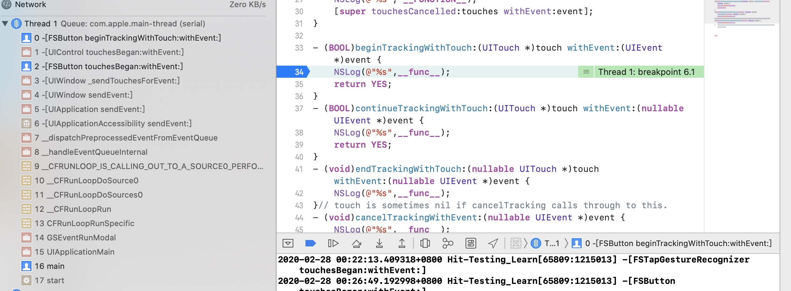
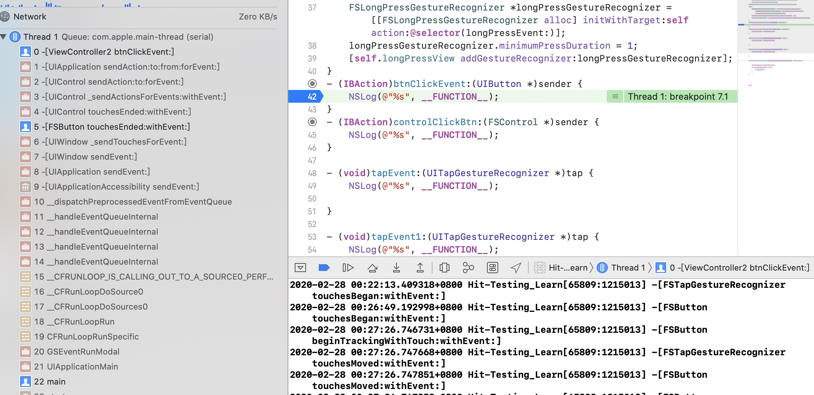
- 可以看到，Window先将时间传递给手势识别器，再传递给第一响应者
FSButton - 手势识别器和第一响应者分别调用touch相关方法对事件进行识别
- 最终第一响应者对事件进行相应调用
sendAction:to:forEvent将target和action发送给UIApplication,UIApplication通过sendAction:to:from:forevent向target发送action
再来看自定义继承UIControl的FSControl
2020-02-28 00:32:26.644690+0800 Hit-Testing_Learn[66062:1228563] -[FSTapGestureRecognizer touchesBegan:withEvent:]
2020-02-28 00:32:26.645519+0800 Hit-Testing_Learn[66062:1228563] -[FSControl touchesBegan:withEvent:]
2020-02-28 00:32:26.645689+0800 Hit-Testing_Learn[66062:1228563] -[FSControl beginTrackingWithTouch:withEvent:]
2020-02-28 00:32:26.646929+0800 Hit-Testing_Learn[66062:1228563] -[FSTapGestureRecognizer touchesEnded:withEvent:]
2020-02-28 00:32:26.647320+0800 Hit-Testing_Learn[66062:1228563] -[ViewController2 tapEvent:]
2020-02-28 00:32:26.647492+0800 Hit-Testing_Learn[66062:1228563] -[FSControl touchesCancelled:withEvent:]
2020-02-28 00:32:26.647634+0800 Hit-Testing_Learn[66062:1228563] -[FSControl cancelTrackingWithEvent:]
此时结果和之前的FSButton优先级比手势识别器高截然相反，优先级竟然更低了
经过验证:
系统提供的有默认action操作的UIControl，例如UIbutton、UISwitch等的单击，UIControl的响应优先级比手势识别器高,而对于自定义的UIControl，响应的优先级比手势低
至于为什么会这样，没找到具体原因，但测试的结果，推测系统应该是依据UITouch的touchIdentifier来进行区别处理
target-action管理
// 添加
- (void)addTarget:(id)target action:(SEL)action forControlEvents:(UIControlEvents)controlEvents
// 删除
- (void)removeTarget:(id)target action:(SEL)action forControlEvents:(UIControlEvents)controlEvents
// 获取控件对象所有相关的target对象
// get info about target & actions. this makes it possible to enumerate all target/actions by checking for each event kind
// 集合中可能包含NSNull 表明至少有一个nil目标对象
@property(nonatomic,readonly) NSSet *allTargets;
- (nullable NSArray<NSString *> *)actionsForTarget:(nullable id)target forControlEvent:(UIControlEvents)controlEvent; // single event. returns NSArray of NSString selector names. returns nil if none
UIControl内部实际上有一个可变数组来保存Target-Action，数组中每个元素都是UIControlTargetAction对象。该类是私有类
@interface UIControlTargetAction : NSObject {
SEL _action;
BOOL _cancelled;
unsigned int _eventMask;// 事件类型,比如:UIControlEventTouchUpInside
id _target;
}
总结 事件完整响应链
- 系统通过
IOKit.framework来处理硬件操作，其中屏幕处理也通过IOKit完成(IOKit可能是注册监听了屏幕输出的端口)
当用户操作屏幕，IOKit收到屏幕操作，会将这次操作封装为IOHIDEvent对象。通过mach port(IPC进程间通信)将事件转发给SpringBoard来处理 - SpringBoard是iOS系统的桌面程序。SpringBoard收到mach port发过来的事件，唤醒main runloop来处理
- main runloop将事件交给source1处理，
source1会调用__IOHIDEventSystemClientQueueCallback()函数
该函数会在内部判断是否有程序在前台显示，如果有通过mach port将IOHIDEvent事件转发给这个程序
如果前台没有程序在显示，则表明SpringBoard的桌面程序在前台显示，也就是用户在桌面进行了操作。__IOHIDEventSystemClientQueueCallback()函数会将事件交给source0处理，source0会调用__UIApplicationHandleEventQueue()函数，函数内部会做具体的处理操作 - 例如用户点击了某个应用程序的icon，会将这个程序启动。
应用程序接收到SpringBoard传来的消息，会唤醒main runloop并将这个消息交给source1处理，source1调用__IOHIDEventSystemClientQueueCallback()函数，在函数内部会将事件交给source0处理，并调用source0的__UIApplicationHandleEventQueue()函数。在__UIApplicationHandleEventQueue()函数中，会将传递过来的IOHIDEvent转换为UIEvent对象 - 在函数内部，将事件放入UIApplication的事件队列，等到处理该事件时，将该事件出队列，UIApplication将事件传递给窗口对象(UIWindow)，如果存在多个窗口，则从后往前询问最上层显示的窗口
- 窗口UIWindow通过hitTest和pointInside操作，判断是否可以响应事件，如果窗口UIWindow不能响应事件，则将事件传递给其他窗口；若窗口能响应事件，则从后往前询问窗口的子视图。
- 以此类推，如果当前视图不能响应事件，则将事件传递给同级的上一个子视图；如果能响应，就从后往前遍历当前视图的子视图
- 如果当前视图的子视图都不能响应事件，则当前视图就是第一响应者
- 找到第一响应者，事件的传递的响应链也就确定的
- 如果第一响应者非UIControl子类且响应链上也没有绑定手势识别器
UIGestureRecognizer; - 那么由于第一响应者具有处理事件的最高优先级，因此UIApplication会先将事件传递给它供其处理。首先，
UIApplication将事件通过sendEvent:传递给事件所属的window，window同样通过sendEvent:再将事件传递给hit-tested view，即第一响应者,第一响应者具有对事件的完全处理权，默认对事件不进行处理，传递给下一个响应者(nextResponder)；如果响应链上的对象一直没有处理该事件，则最后会交给UIApplication，如果UIApplication实现代理，会交给UIApplicationDelegate，如果UIApplicationDelegate没处理，则该事件会被丢弃 - 如果第一响应者非UIControl子类但响应链上也绑定了手势识别器
UIGestureRecognizer - UIWindow会将事件先发送给响应链上绑定的手势识别器
UIGestureRecognizer，再发送给第一响应者，如果手势识别器能成功识别事件，UIApplication默认会向第一响应者发送cancel响应事件的命令;如果手势识别器未能识别手势，而此时触摸并未结束，则停止向手势识别器发送事件，仅向第一响应者发送事件。如果手势识别器未能识别手势，且此时触摸已经结束，则向第一响应者发送end状态的touch事件，以停止对事件的响应 - 如果第一响应者是自定义的UIControl的子类同时响应链上也绑定了手势识别器
UIGestureRecognizer;这种情况跟第一响应者非UIControl子类但响应链上也绑定了手势识别器UIGestureRecognizer处理逻辑一样 - 如果第一响应者是UIControl的子类且是系统类(UIButton、UISwitch)同时响应链上也绑定了手势识别器
UIGestureRecognizer - UIWindow会将事件先发送给响应链上绑定的手势识别器
UIGestureRecognizer，再发送给第一响应者，如果第一响应者能响应事件，UIControl调用调用sendAction:to:forEvent:将target、action以及event对象发送给UIApplication，UIApplication对象再通过sendAction:to:from:forEvent:向target发送action
示例：
超出子视图范围
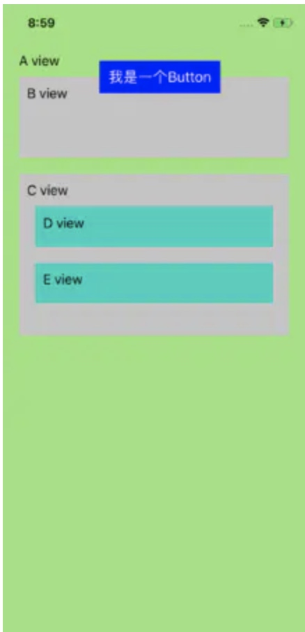
此时 当点击btn不在BView时，并不起作用，因为点击的点在btn的父视图Bview外 则事件无法传递到btn，如果想要点击外部区域也起作用
//在BView重写
//处理超出区域点击无效的问题
- (UIView *)hitTest:(CGPoint)point withEvent:(UIEvent *)event {
if (self.isHidden == NO) {
// 转换坐标
CGPoint newPoint = [self convertPoint:point toView:self.btn];
// 判断点击的点是否在按钮区域内
if ( [self.btn pointInside:newPoint withEvent:event]) {
//返回按钮
return self.btn;
}else{
return [super hitTest:point withEvent:event];
}
}
else {
return [super hitTest:point withEvent:event];
}
}
想要扩大视图的点击范围
假如想要扩大按钮的点击范围
//TabBar
- (BOOL)pointInside:(CGPoint)point withEvent:(UIEvent *)event {
//将触摸点坐标转换到在CircleButton上的坐标
CGPoint pointTemp = [self convertPoint:point toView:self.indicateView];
//若触摸点在CricleButton上则返回YES
if ([self.indicateView pointInside:pointTemp withEvent:event]) {
return YES;
}
//否则返回默认的操作
return [super pointInside:point withEvent:event];
}